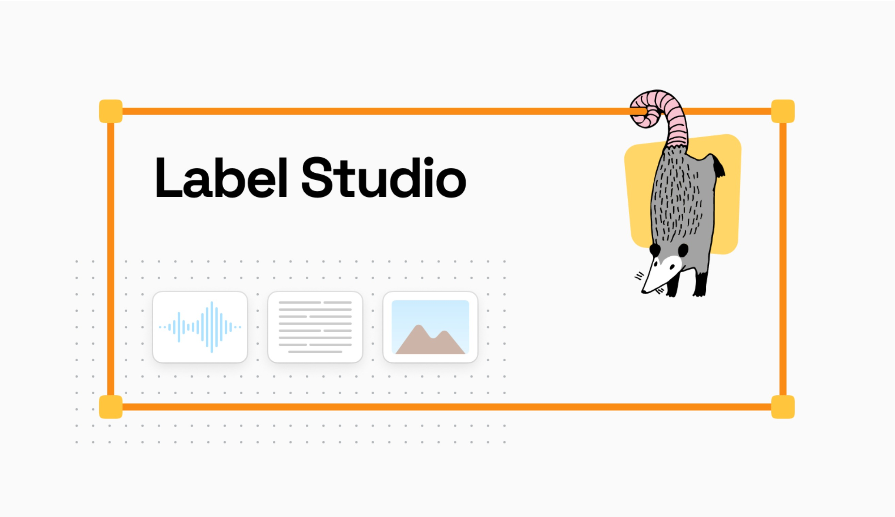
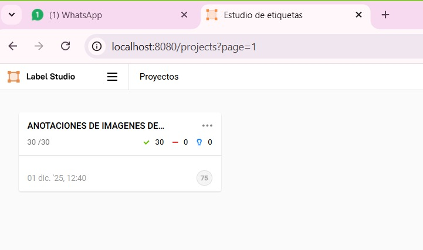
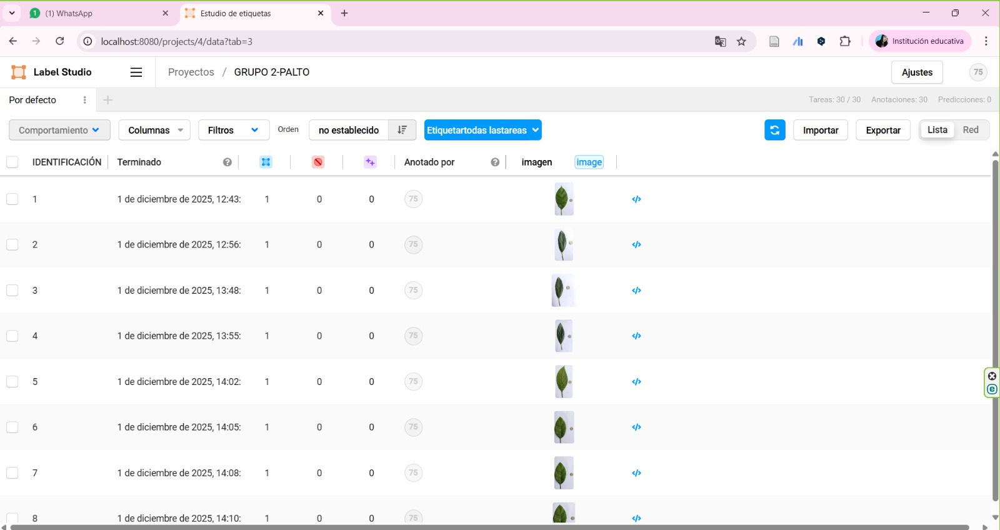
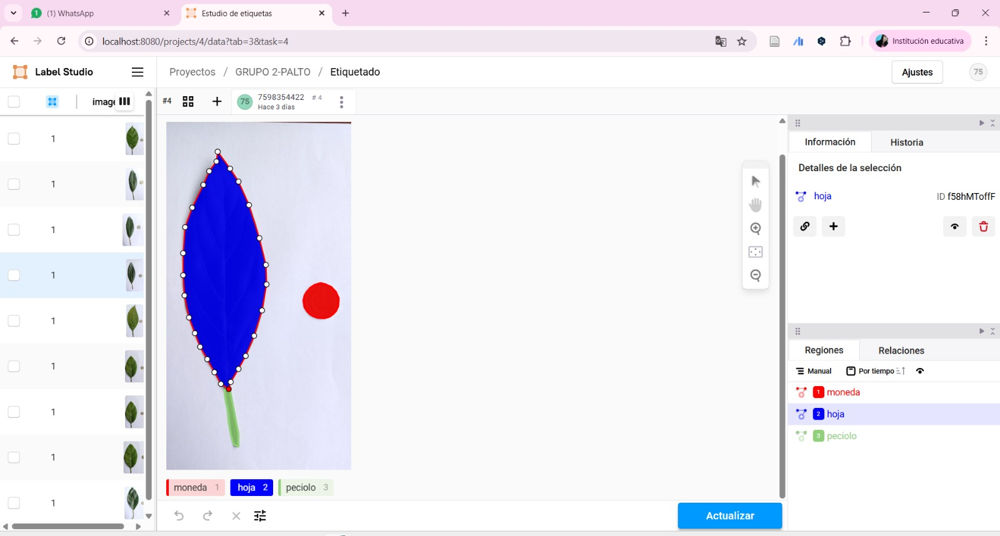

1 INTRODUCCIÓN

La palta (Persea americana) es un cultivo estratégico en numerosos sistemas agrícolas debido a su alto valor nutricional, sus propiedades funcionales y la creciente demanda global. En este contexto, la identificación temprana de alteraciones foliares derivadas de estrés biótico, abiótico o deficiencias nutricionales, esto resulta fundamental para optimizar la productividad y fortalecer las decisiones dentro de la agricultura de precisión. En los últimos años, la integración de técnicas de visión por computadora y modelos de aprendizaje automático ha permitido automatizar procesos que antes dependían exclusivamente de la inspección visual humana, aumentando así la eficiencia y la reproducibilidad del diagnóstico vegetal.
El desarrollo de estos modelos requiere disponer de un conjunto de imágenes adecuadamente etiquetadas. En este sentido, Label Studio se ha consolidado como una herramienta versátil y de código abierto para la anotación estructurada de datos visuales. Su capacidad para definir regiones de interés, crear máscaras, clasificar patrones y exportar anotaciones en formatos compatibles con marcos de trabajo como TensorFlow, PyTorch o Keras lo convierte en un recurso esencial dentro de los flujos modernos de análisis automatizado.
En el caso de las hojas de palta, la anotación precisa adquiere especial relevancia, puesto que la forma del limbo, la textura, el color, las lesiones y otros rasgos visuales influyen directamente en el desempeño de los algoritmos de clasificación y segmentación. Por ello, el uso de Label Studio no solo facilita la organización y el etiquetado meticuloso de las imágenes, sino que garantiza la trazabilidad y la estandarización necesarias para reproducir el análisis.
Este sitio web documenta el proceso de preparación, organización y etiquetado de un conjunto de imágenes de hojas de palta mediante Label Studio. Se describen los procedimientos técnicos empleados, la configuración de la plataforma, los criterios para definir clases y categorías, así como los pasos seguidos para exportar las anotaciones hacia modelos de aprendizaje automático. El objetivo es proporcionar una guía clara y reproducible para investigadores, estudiantes y profesionales interesados en aplicar herramientas de anotación digital dentro del contexto de la agricultura de precisión.
2 OBJETIVOS
2.1 O. OBEJTIVO GENERAL
Desarrollar un sistema estructurado de etiquetado y anotación de imágenes de hojas de palta (Persea americana) utilizando la plataforma Label Studio, con el fin de generar un conjunto de datos confiable y adecuado para el entrenamiento y validación de modelos de aprendizaje automático orientados al análisis foliar.
2.2 O. OBJETIVO ESPECIFICO
- Documentar el procedimiento de captura, organización y preprocesamiento de imágenes de hojas de palta como insumo para la construcción del dataset.
- Configurar y adaptar la interfaz de Label Studio para la anotación de hojas de palta, definiendo clases, etiquetas y criterios visuales relevantes para el análisis automático.
- Realizar la anotación manual de regiones de interés (ROI) en las imágenes, considerando la morfología foliar, presencia de daños, manchas, variaciones cromáticas y otros patrones visuales relevantes.
- Exportar las anotaciones generadas en formatos compatibles con marcos de trabajo de aprendizaje profundo (p. ej., COCO, Pascal VOC, JSON-LS), garantizando su calidad y consistencia.
- Evaluar la calidad del dataset anotado mediante revisión sistemática de etiquetas y verificación de la coherencia entre anotadores.
- Preparar el conjunto de datos para su uso en modelos de visión por computadora, integrando las anotaciones en pipelines de entrenamiento y validación.
3 DESARROLLO
3.1 ¿Qué es Anaconda?
Es una plataforma que facilita el uso de Python y R para realizar tareas de análisis de datos, ciencia de datos, aprendizaje automático y computación científica. Anaconda y sus herramientas asociadas son altamente relevantes en la agricultura debido a su capacidad para gestionar y analizar grandes volúmenes de datos.
Algunos ejemplos de su aplicación en la agricultura son:
- Análisis de datos agrícolas
- Monitoreo de cultivos
- Agricultura de precisión
- Modelado y predicción de clima
- Gestión de recursos
3.2 ¿Qué es Label Studio?

Permite a los usuarios crear y gestionar anotaciones de datos de manera eficiente. Su propósito es proporcionar una plataforma fácil de usar para realizar tareas de etiquetado que son cruciales para entrenar modelos de IA. Las anotaciones pueden incluir tareas como clasificación, segmentación, detección de objetos, y más. Label Studio se puede instalar en un servidor local o ejecutarse en la nube. La instalación local se puede hacer usando Docker o simplemente instalando el paquete con pip: pip install label-studio y luego label-studio.
Características principales:
Soporta múltiples tipos de datos: Imágenes, texto, audio, video y más.
Interfaz personalizable: Los usuarios pueden crear sus propios flujos de trabajo y definir el tipo de anotación que se requiere (por ejemplo, etiquetar objetos en una imagen, o clasificar texto).
Integración con modelos de aprendizaje automático: Se puede conectar con modelos preexistentes para realizar anotaciones automáticas y luego corregirlas manualmente.
Gestión de equipos: Permite trabajar en equipo, asignar tareas a diferentes personas y realizar un seguimiento del progreso.
3.3 Modo de uso de Label Studio
Instalación: Label Studio se puede instalar en un servidor local o ejecutarse en la nube. La instalación local se puede hacer usando el paquete con pip: Copiar código : pip install label-studio.

Iniciar Iniciar Label Studio desde Anaconda Prompt

Se crea un proyecto
Una ves instalado Label Studio, inicio cesion utilizando el comando o codigo label studio. Esto abrirá la aplicación en un navegador web donde puedes crear un nuevo proyecto. Un proyecto en Label Studio consiste en una colección de datos que vas a etiquetar.
Configuración del Tipo de Etiquetado
a) Clasificación de imágenes: donde se asignan etiquetas a las imágenes (por ejemplo, “perro”, “gato”).
b) Detección de objetos: donde se dibujan cuadros alrededor de objetos dentro de una imagen.
c) Segmentación de imágenes: donde se etiquetan áreas específicas dentro de la imagen, útil en tareas de visión por computadora.
Subir Datos
Los datos (imágenes, audios, textos, videos, etc.) se cargan al proyecto. Puedes subir tus archivos desde tu computadora o importarlos desde un servidor o almacenamiento en la nube.
Etiqueta de Datos
Una vez que los datos están cargados, puedes comenzar a etiquetar. La interfaz de usuario de Label Studio es bastante intuitiva y permite a los usuarios seleccionar y etiquetar con facilidad. Si estás etiquetando imágenes, por ejemplo, puedes dibujar cuadros o polígonos alrededor de los objetos que quieres identificar y asignarles etiquetas específicas.
Revisión y Exportación
Después de realizar el etiquetado, el trabajo puede ser revisado por otros miembros del equipo (si se está trabajando en grupo). Los datos anotados pueden luego ser exportados en varios formatos, como JSON o CSV, para ser utilizados en el entrenamiento de modelos de Machine Learning.
3.4 MATERIALES Y METODOS
3.5 Materiales empleados en el trabajo
Hojas del cultivo de palta (Persea Americana) 1. Imágenes de hojas de palta Se utilizaron un total de 30 hojas, capturadas en condiciones controladas, incluyendo variaciones en iluminación, ángulo de toma. Las fotografías fueron obtenidas con dispositivos móviles. Este material constituyó la base del conjunto de datos destinado a la anotación.
Equipo de cómputo Se empleó un equipo portátil con sistema operativo Windows.
Plataforma de anotación: Label Studio Se utilizó label studio, una herramienta de código abierto para la anotación de datos visuales.
Entorno de desarrollo R y RStudio Para la elaboración de este sitio web y la documentación metodológica se utilizó rstudio, Además, se empleó Quarto para la generación del sitio web, facilitando la estructuración del contenido en formato reproducible.
3.6 Procedimientos empleados
Como grupo se considero la toma de 5 fotografias de diferentes hojas por cada integrante del grupo, para la cual, para mantener un mejor orden se coloco las imagenes en un google drive.
 Ejemplo de las imagenes.
Ejemplo de las imagenes.
- Link de las 30 imagenes de hojas de palta (Persea americana).
https://drive.google.com/drive/folders/11ezcuANsCi2VOo6hzjzPEXoO6RYLLo8U
- Crear un proyecto: Llamado “Anotaciones de imagenes palto”

- Subir imágenes: Imágenes de las hojas de palto

Etiquetado
Primero Seleccione la etiqueta para comenzar a dibujar alrededor de las imágenes haciendo puntos. 
El etiquetado se revisa y ajusta según sea necesario

3.7 RESULTADOS
https://drive.google.com/drive/u/0/folders/12gu83o8PPPS1Uvj53K9Cc5vKET5xwczR
En este link se encontrara todas las imagenes que se emplearon para el presente trabajo, utilizando label studio.
3.8 CONCLUSIONES
El uso de herramientas digitales como Anaconda y Label Studio constituye un apoyo fundamental para el análisis avanzado de imágenes foliares de palta (Persea americana). Anaconda permite gestionar entornos de trabajo con Python y R de manera integrada, facilitando el procesamiento de grandes volúmenes de datos y la construcción de modelos predictivos orientados al diagnóstico vegetal. Por su parte, Label Studio optimiza el proceso de etiquetado de imágenes de hojas, permitiendo identificar patrones asociados a estrés hídrico, deficiencias nutricionales o la presencia de patógenos con un alto grado de precisión. La combinación de estas tecnologías fortalece la toma de decisiones en sistemas de producción de palta, impulsa el desarrollo de modelos de inteligencia artificial aplicados a la agricultura y contribuye a la innovación y sostenibilidad del sector.
3.9 REFERENCIAS
Anaconda. (s. f.). https://www.anaconda.com/download
Open Source Data Labeling. (s. f.).https://labelstud.io/